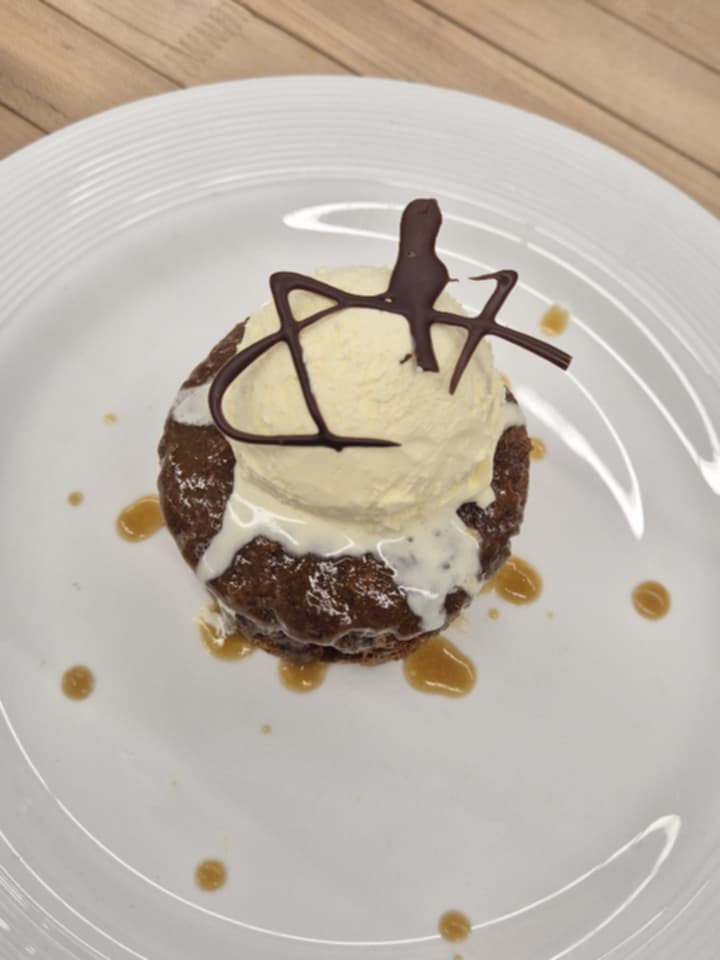
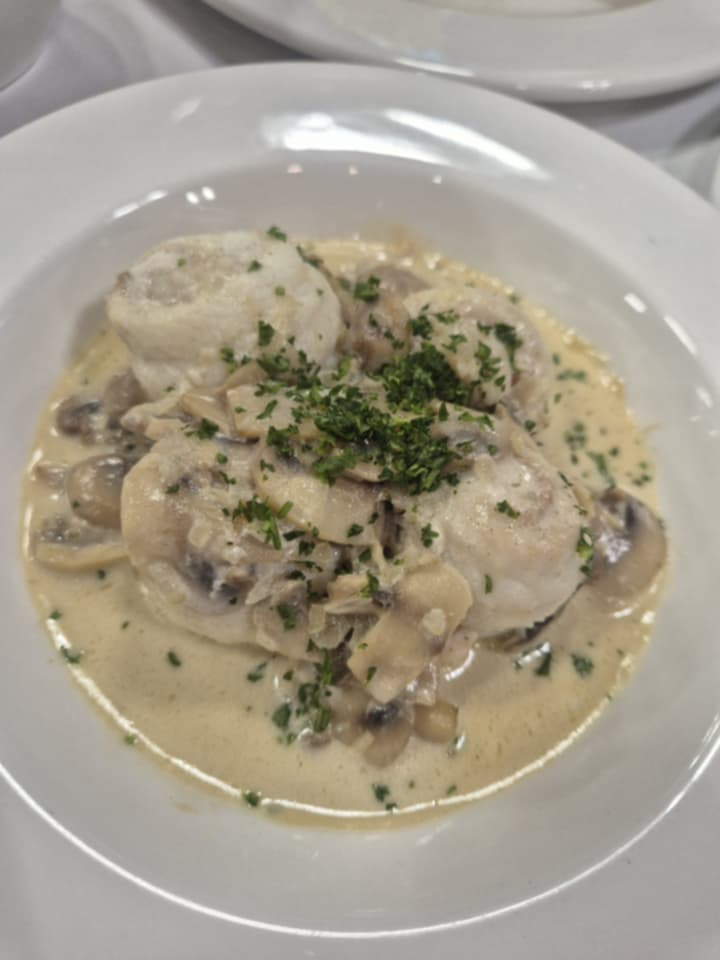
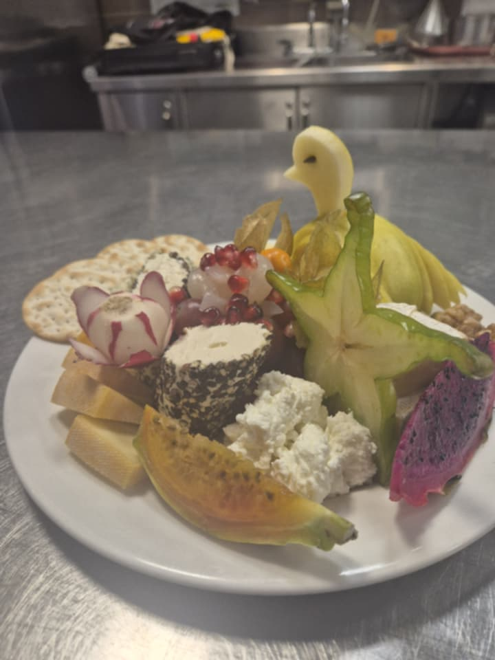
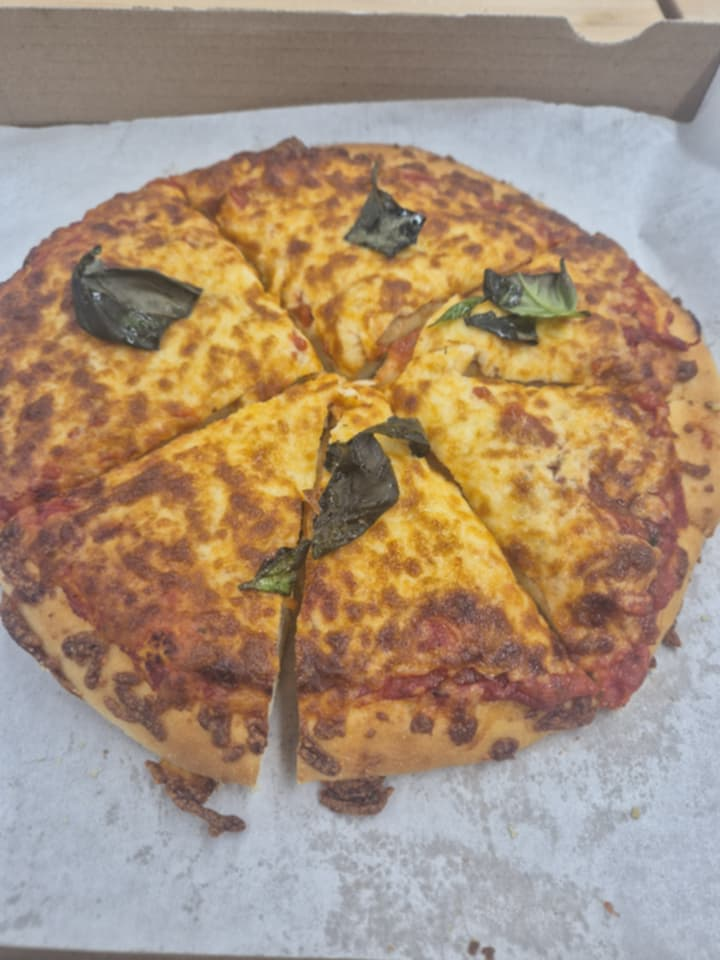
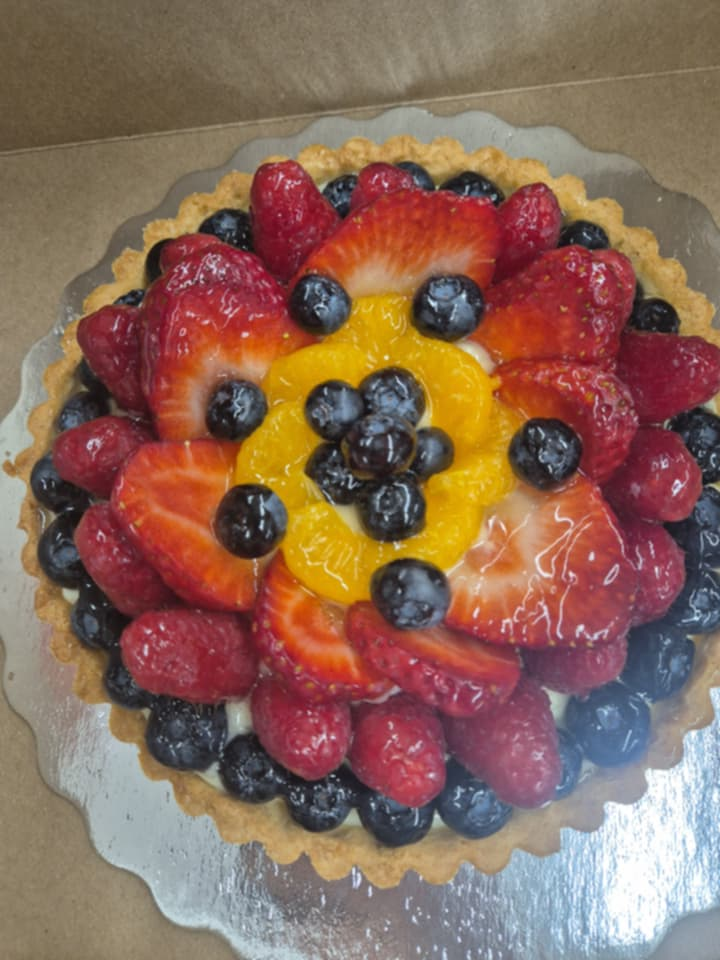
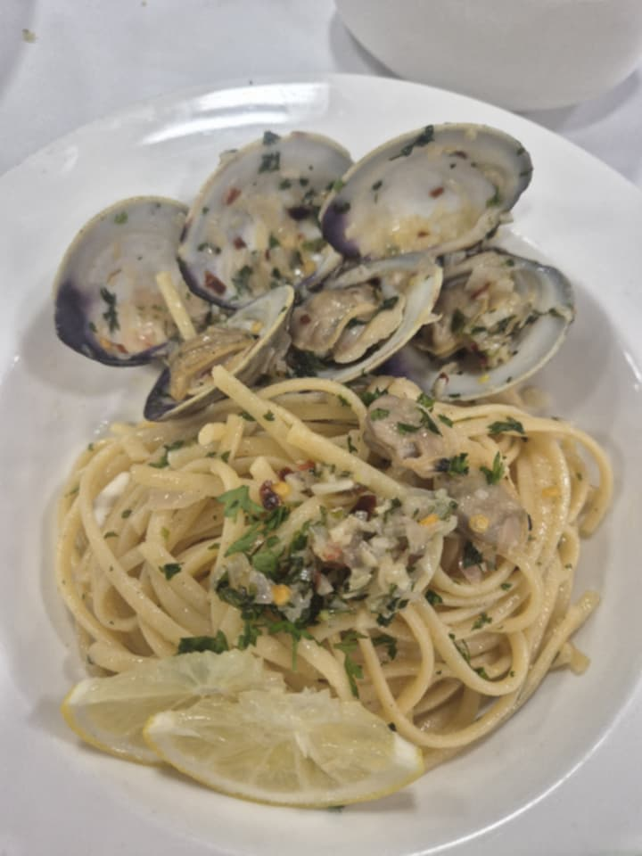
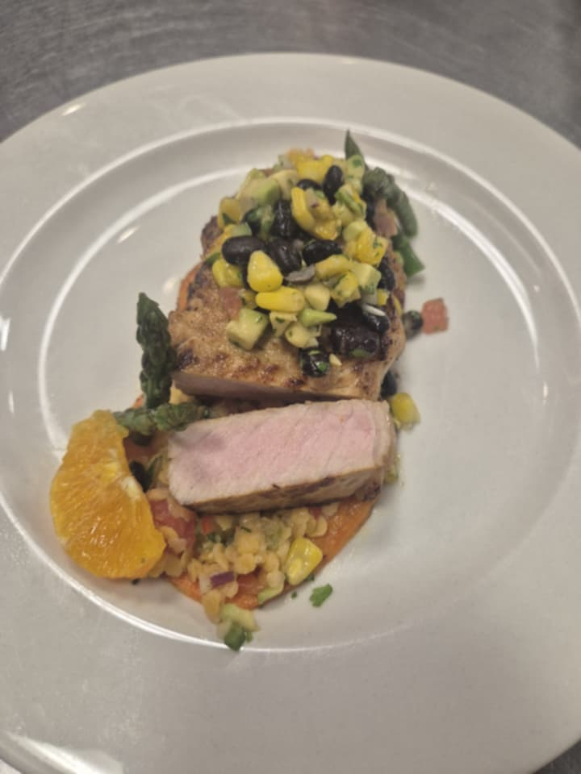
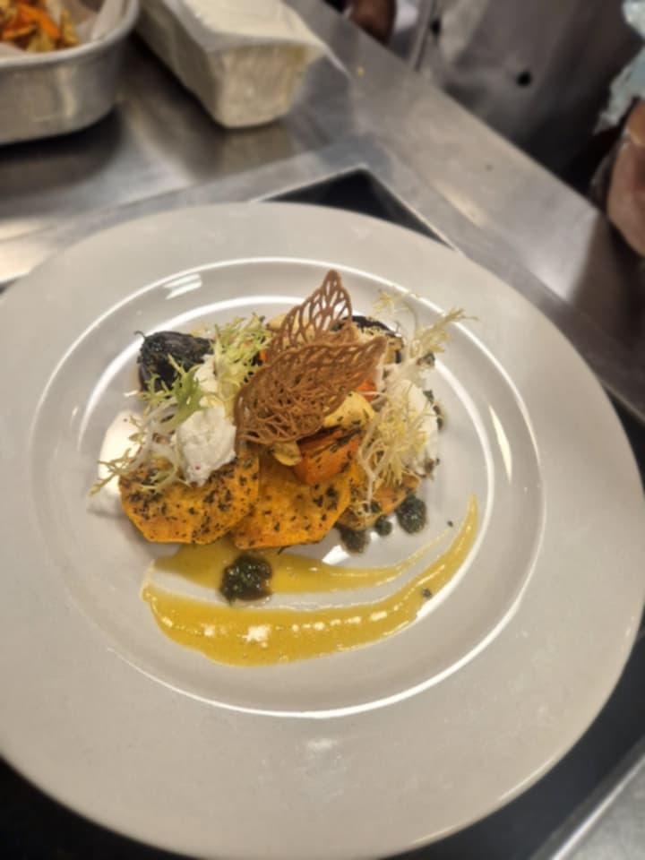

Line cook, Humber Polytechnic Culinary Management
I am a passionate culinary student currently studying in Canada, with hands-on experience working in professional kitchens. I specialize in modern cuisine and creative plating.
Humber Polytechnic Etobicoke, ON Culinary Management, January 2025 - present During my time at Humber College, I have been building a strong foundation in culinary skills and kitchen operations. Through hands-on classes and practical training, I’ve developed my confidence in food preparation, cooking techniques, and teamwork. This experience has helped me grow both technically and professionally, preparing me for real-world kitchen environments and my upcoming internship.
- Develop and refine culinary skills in a professional kitchen environment
- Perform effectively in a fast-paced, high-quality service setting
- Apply practical cooking techniques and assist during service
- Gain hands-on experience in food preparation and presentation
- Build strong teamwork and communication skills in the kitchen








Email: ttvanh070305@gmail.com
Phone: 6472199002
Location: Canada